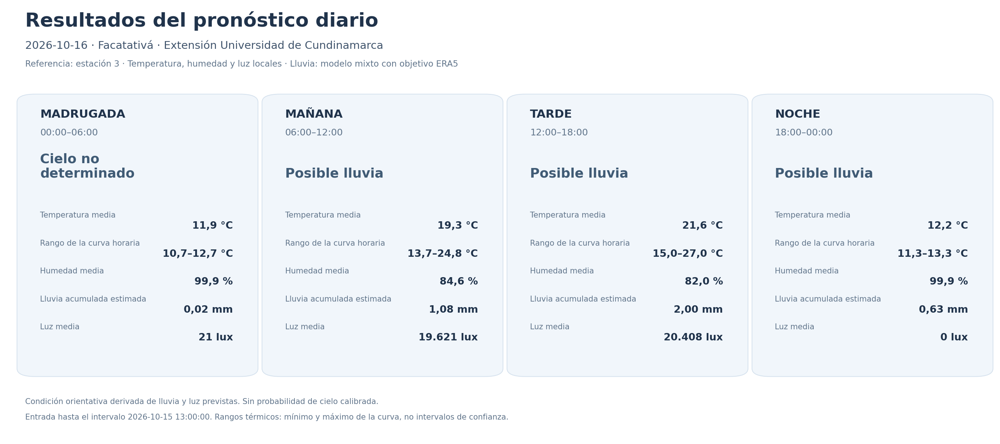
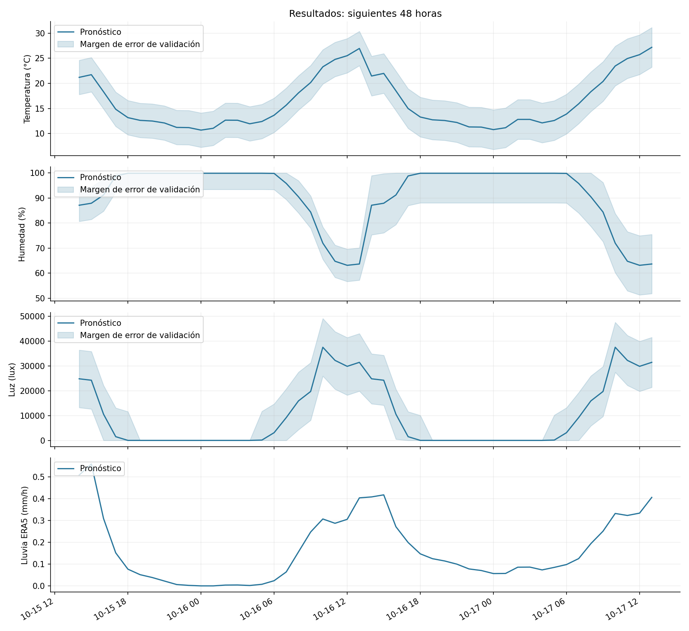
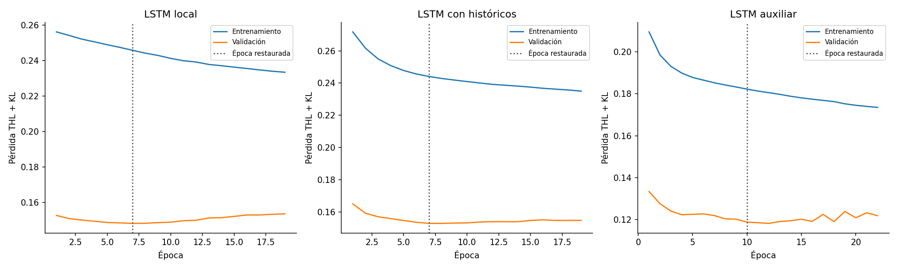
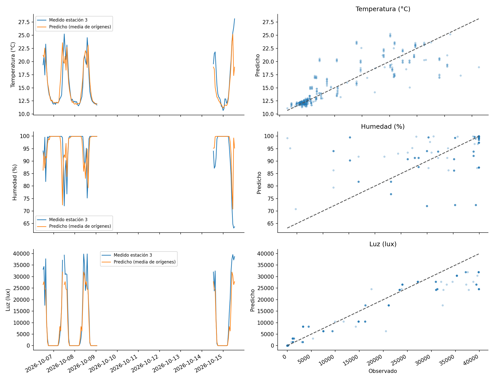
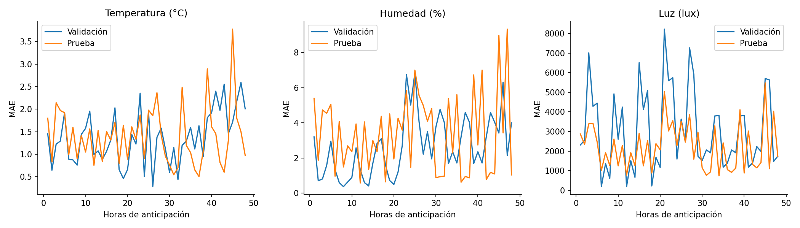
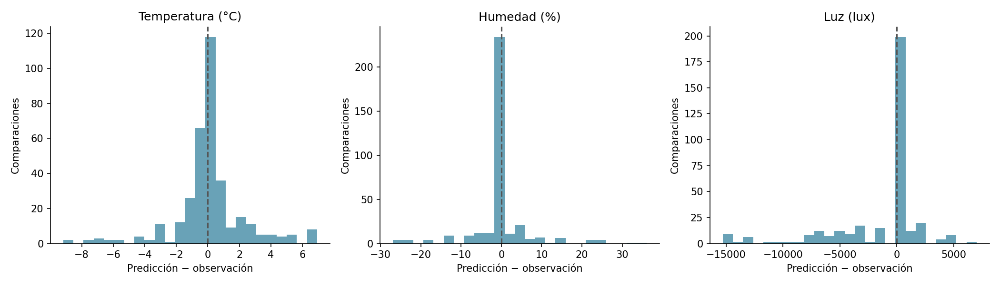
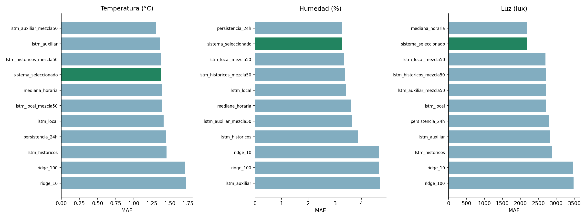
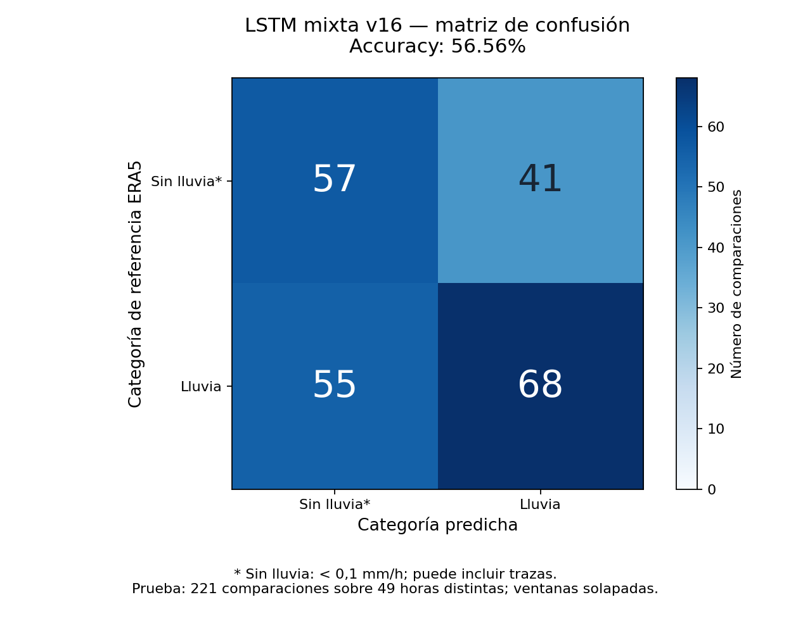

Informe y método · Métricas completas
| variable | mae | rmse | r2 | horas_distintas |
|---|---|---|---|---|
| tem | 1.378 | 2.257 | 0.704 | 88 |
| hum | 3.272 | 7.191 | 0.065 | 88 |
| rad | 2189.984 | 4180.552 | 0.911 | 87 |








Referencia ERA5 ≥0,1 mm/h; 49 horas distintas.